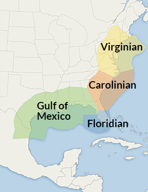

| Species | Est. Site Abundance | # New Indiv | New Biomass (kg) |
|---|---|---|---|
| {{commonName}} | {{#if abundanceWeight === 0}}None: 0/ha {{elseif abundanceWeight === 1}}Avg: {{Math.round(juvMeanHa)}}/ha {{elseif abundanceWeight === 2}}High: {{Math.round(juvMeanHa+(juvStDevAcre/0.404686))}}/ha {{/if}} | {{#if abundanceWeight === 0}} 0 {{elseif abundanceWeight === 1}} {{format( (juvMeanHa * goalData.goalfiltration)/(10000*((goalData.goalmarketdensity * goalData.goalmarketoneoysterrate)+(goalData.goalculldensity * goalData.goalculloneoysterrate))))}} {{elseif abundanceWeight === 2}} {{format( ((juvMeanHa + (juvStDevAcre/0.404686)) * goalData.goalfiltration)/(10000*((goalData.goalmarketdensity * goalData.goalmarketoneoysterrate)+(goalData.goalculldensity * goalData.goalculloneoysterrate))))}} {{/if}} | {{#if abundanceWeight === 0}} 0 {{elseif abundanceWeight === 1}} {{format( (meanProductionKgHa * goalData.goalfiltration)/(10000*((goalData.goalmarketdensity * goalData.goalmarketoneoysterrate)+(goalData.goalculldensity * goalData.goalculloneoysterrate))))}} {{elseif abundanceWeight === 2}} {{format( ((meanProductionKgHa + (stDevProductionKgAcre/0.404686))* goalData.goalfiltration)/(10000*((goalData.goalmarketdensity * goalData.goalmarketoneoysterrate)+(goalData.goalculldensity * goalData.goalculloneoysterrate))))}} {{/if}} |
Fish production data are only available for the Northern Gulf of Mexico, Floridian, Carolinian , and Virginian ecoregions.
 {{/if}}